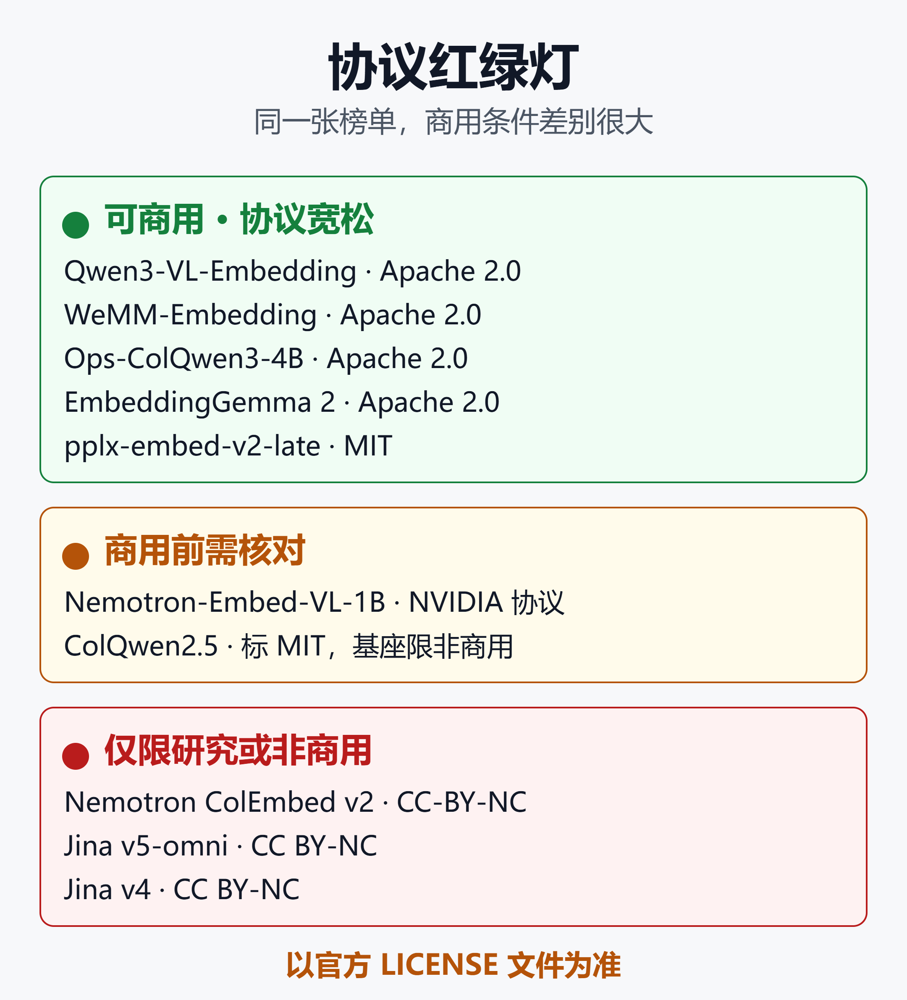
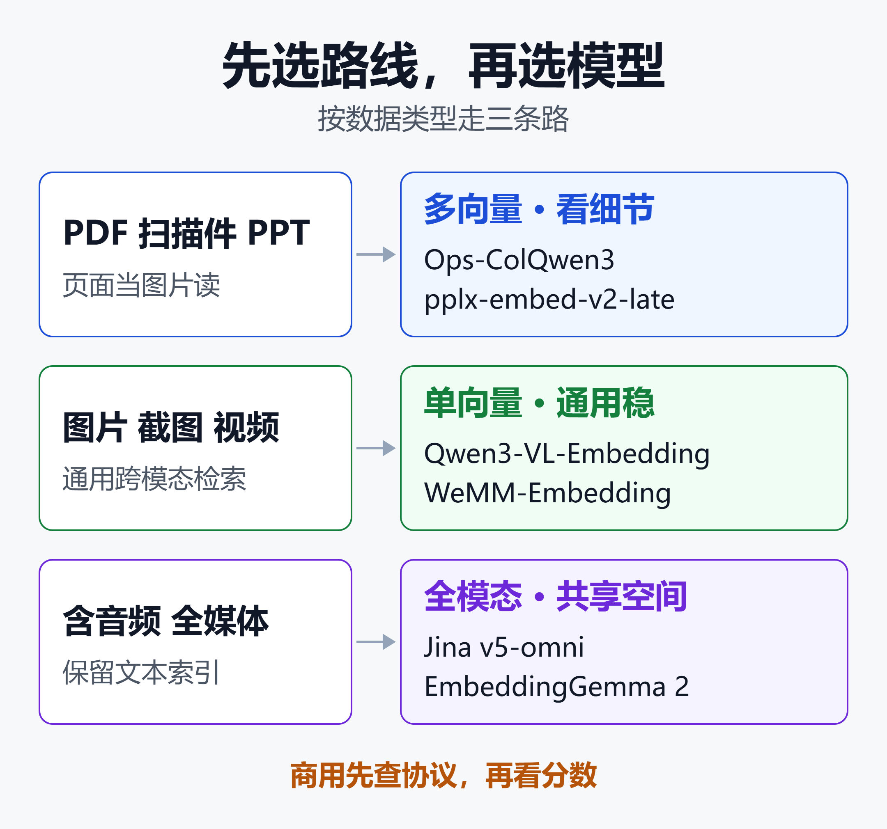

多模态 RAG 选哪个向量模型？按场景、显存、协议给出的 2026 选型决策表
2026 年 1 月，Qwen3-VL-Embedding-8B 以 MMEB-V2 总分 77.8 拿下开源第一。8 月，腾讯微信的 WeMM-Embedding-9B 把这个数字推到 80.6，连 2B 小模型都做到了 77.9。
但榜单上最亮眼的视觉文档检索模型，Nemotron ColEmbed v2 和 Jina 的两代产品，协议都是 CC BY-NC。企业不能直接拿去商用。
所以"选哪个"早就不是挑分数最高的。这篇文章按三个问题收敛：数据是什么、显卡多大、协议能不能商用。
文末有一张可以直接对照的选型决策表。文中分数几乎都是厂商或论文作者自报，用到时会标注口径。
一、先选路线：单向量还是多向量
多模态向量模型分两条路线，选型要先选路线，再选模型。
- 单向量：一段文本、一张图、一页文档，各压成一个向量。存储小，任何向量库都能直接用。
- 多向量（晚交互）：每个 token 或图像 patch 保留一个向量，检索时用 MaxSim 逐词匹配。细节保留得好，但存储大一到两个数量级。
原理细节见 PDF 不用 OCR 也能搜：Perplexity pplx-embed-v2-late 原理、跑分与落地指南，本文只讲选型相关的结论。
| 路线 | 每页存储 | 擅长 |
|---|---|---|
| 单向量 | 约 2 到 4KB | 通用跨模态、视频 |
| 多向量 | 约 256KB 起 | 表格、图表、小字页面 |
上表的存储是示意估算：假设一页约 1000 个 token、fp16 存储，单向量取 1024 到 2048 维，多向量取 128 维。实际 token 数取决于页面分辨率和模型的切分方式。
经验上的分界线很清晰：要在页面里"看细节"的，选多向量；其余场景优先单向量。
Qwen 官方推荐的是单向量加重排的两阶段：Embedding 负责召回，Reranker 负责精排。把单向量粗召回和多向量精排组合也是常见的工程思路，效果需要在自己的数据上验证。
二、通用单向量阵营
Qwen3-VL-Embedding：默认起点
阿里 Qwen 团队 2026 年 1 月开源，基于 Qwen3-VL，协议 Apache 2.0。输入覆盖文本、图片、截图、视频和它们的混合。
官方给出的规格如下：
| 型号 | 向量维度 | MMEB-V2 |
|---|---|---|
| 2B | 2048 | 73.2 |
| 8B | 4096 | 77.8 |
两个型号上下文都是 32K，支持 33 种语言，支持 MRL 降维、量化和指令感知。还配套 2B、8B 两档 Reranker，可以直接搭成召回加重排。
8B 的分项成绩是：图像 80.1、视频 67.1、视觉文档 82.4。运行需要 vLLM 0.14.0 或更高版本。
Milvus 做过一次自建基准，测 10 个模型的跨模态检索。Qwen3-VL-Embedding-2B 的 R@1 为 0.945，超过 Gemini Embedding 2 的 0.928。
这个测试只用了 200 组 COCO 图文对，每组配 3 条难负例，属于小规模自测。它说明的是 2B 开源模型已经够用，不能当作权威排名。
WeMM-Embedding：分数最高，参数效率最好
腾讯微信视觉团队 2026 年 8 月发布，基于 Qwen3.5，有 2B、4B、9B 三档。输入覆盖文本、图片、视频、视觉文档和交错混合输入。
| 型号 | MMEB-V2 总分 | 视频子项 |
|---|---|---|
| 2B | 77.9 | 70.8 |
| 4B | 79.2 | 72.1 |
| 9B | 80.6 | 74.3 |
2B 就追平了 Qwen3-VL-Embedding-8B 的 77.8。9B 的 80.6，在官方引用的榜单快照（2026 年 8 月 24 日）里排第一。
几个要注意的点：
- 不支持音频。官方 README 写得很明确。
- 支持 MRL。2B 降到 256 维，官方称在 MMEB-v2 上保留 98.7% 的图像与视频性能。
- 官方建议用 transformers 5.2.0，更新版本的预处理行为可能不同。
- 模型卡的协议字段是 other，注明 Apache 2.0，商用前请读一遍仓库里的 LICENSE 文件。
- 分数是自报。榜单里也混着闭源提交，比如 DME-Medium 的 78.4，没有公开权重。
在更大的 MMEB-V3（共 190 个任务，含文本、Agent、音频）上，WeMM-9B 得 59.3，Qwen3-VL-Embedding-8B 得 53.5。但音频项两者都记 0 分，因为都不支持，总分的比较要带着这个前提看。
Jina v5-omni：最小的全模态，但分数不是最高
Jina 在 2026 年 5 月发布，有 small 和 nano 两档，是 v4 之后的新一代。v4 是 3.8B 的视觉文档检索模型，v5-omni 则走了完全不同的路。
它的做法是"冻结加拼接"：把 Jina v5-text 的文本骨干冻住，再接上冻结的图像编码器（来自 Qwen3.5）和音频编码器（Whisper-large-v3），只训练中间的投影层，约占总权重的 0.35%。
直接结果有三个：
- 文本向量与 v5-text 逐位一致，已有文本索引不用重建，直接用图片、音频、视频去查。
- 模型很小：模型卡标 small 约 1.74B、1024 维，nano 约 1.04B、768 维（论文表格的口径略小，分别是 1.57B 和 0.95B）。
- 输入覆盖文本、图片、视频、音频和 PDF，语言接近 100 种。
但它的分数不是最高。下面是论文自己对照表里的数字：
| 任务 | v5-omni-small | 最强开源对照 |
|---|---|---|
| 图像 MIEB Light | 55.0 | 61.6（LCO-Omni-3B） |
| 视频 MMEB-Video | 39.8 | 67.2（Qwen3-VL-8B） |
| 音频 MAEB | 50.0 | 52.4（LCO-Omni-7B） |
读法很清楚：音频接近最强，图像居中，视频差距很大。它的卖点是小模型加文本兼容，不是榜单第一。
协议是 CC BY-NC 4.0，两档都一样。商用需要向 Elastic 申请授权，Jina 已在 2025 年 10 月被 Elastic 收购。想省事可以用 Elastic Inference Service 的托管版本。
EmbeddingGemma 2：Apache 2.0 的轻量全模态
Google DeepMind 在 10 月 6 日开源，基于 Gemma 4，全模态版本共 740M 参数，输出 768 维单向量，Apache 2.0 协议。
它是模块化的：文本和代码配置 270M，加视觉约 440M，加音频约 570M，全部加载为 740M。不同配置输出同一向量空间，小配置的查询可以去匹配大配置建的索引。
更多细节见前面那篇 pplx-embed 文章的第六节。
选型要注意：官方尚未公布它在 MMEB 或 ViDoRe 上的成绩，暂无同基准对比，只给了 MTEB 代码类提升。第三方小规模实测里，图片跨模态区分度尚可，音频区分度很弱。它适合轻量和端侧，不适合拿来当高精度文档检索的首选。
Nemotron-Embed-VL-1B：商用友好的文档页单向量
NVIDIA 在 2025 年 12 月发布的 llama-nemotron-embed-vl-1b-v2，约 1B 参数，是双塔单向量模型。输入可以是页面图片、文本或图文组合，支持表格、图表和信息图。
协议是 NVIDIA Open Model License，并附带 Llama 3.2 社区许可，模型卡明确写着可商用。它也提供 NIM 微服务版本。
它的定位是"文档页检索里最省事的商用方案"：模型小，向量是单个，不用多向量索引。具体精度请看模型卡里的 ViDoRe 成绩，并用自己的数据复测。
三、视觉文档多向量阵营
这一路的代表思想来自 ColPali：把 PDF 页面渲染成图片，让视觉语言模型直接输出多向量，免去 OCR、版面分析和表格还原。
评测上，ViDoRe V3 是目前最新的基准：10 个数据集、约 2.6 万页、3099 条人工校验查询，覆盖 6 种语言。
Nemotron ColEmbed v2：榜单第一，但只能研究用
NVIDIA 的 Nemotron ColEmbed v2 有 3B、4B、8B 三档，基于 Qwen3-VL。8B 在 ViDoRe V3 的 8 个公开任务上得分约 63.5，发布时排第一。4B 得 61.42。
麻烦在协议：CC-BY-NC-4.0，模型卡明说仅限非商用或研究。基座 Qwen3-VL 是 Apache 2.0，NVIDIA 发布的衍生模型却收紧了。
这给了一个重要提醒：基座协议宽松，不等于衍生模型协议宽松。
Ops-ColQwen3-4B：Apache 2.0 的多向量选项
阿里云 OpenSearch-AI 团队开源，基于 Qwen3-VL-4B，Apache 2.0，支持 30 多种语言，上下文 32K，每页最多 1280 个视觉 token。
它的向量维度可调，最高 2560 维。官方在 ViDoRe v1+v2 上的 NDCG@5 是：2560 维 84.87，降到 128 维仍有 84.04。
维度砍掉 20 倍，只损失不到 1 分，这对存储很有价值。模型卡目前只列出 v1 和 v2 的数字，V3 成绩请以官方最新页面为准。
pplx-embed-v2-late：128 维窄向量
Perplexity 在 10 月 7 日开源，0.6B 与 9B 两档共享向量空间，MIT 协议。每个 token 只有 128 维，比不少多向量模型窄 16 到 32 倍。
官方自报 9B 在 MADQA 上 92.4%，ViDoRe v3 图像检索 9B 为 65.2%、0.6B 为 62.3%。技术报告还没发布，分数都是自报。
对照时别踩的坑
| 模型 | ViDoRe 数据 | 协议 |
|---|---|---|
| Nemotron ColEmbed 8B | V3 约 63.5 | CC-BY-NC |
| pplx-embed 9B | V3 图像 65.2% | MIT |
| Ops-ColQwen3-4B | V1+V2 84.87 | Apache 2.0 |
这张表的数字不能直接比大小。Nemotron 是模型卡给出的 8 个公开任务均分，pplx 是厂商自报，Ops 的模型卡目前只列出 V1 和 V2。三家的评测口径不同，要比就得在同一套脚本上自己跑。
上一代：ColQwen2.5 与 Jina v4
ColQwen2.5-v0.2 是 ColPali 家族的主力，基于 Qwen2.5-VL-3B，训练数据 12.7 万条英文问页对。
模型卡标的是 MIT，但它的基座 Qwen2.5-VL-3B 用的是 qwen-research 协议。商用前必须让法务确认这条链路。
Jina v4 基于同一个基座，约 3.8B，支持单向量 2048 维和多向量 128 维，模型卡写的协议是 CC BY-NC 4.0。它能力不弱，但新项目已经没有理由优先选它。
四、音频与视频：谁能真的覆盖
先说结论：视频看 WeMM 和 Qwen3-VL，音频看 LCO 和 Jina，商用要全覆盖只有 EmbeddingGemma 2。
- 视频：MMEB-Video 上 Qwen3-VL-Embedding-8B 为 67.1，WeMM-9B 为 74.3。Jina v5-omni-small 为 39.8，差距明显。
- 音频：LCO-Embedding-Omni（3B 与 7B，基于 Qwen2.5-Omni）在 Jina 论文的对照里领先，v5-omni 接近。WeMM 和 Qwen3-VL-Embedding 都不支持音频。
- 全覆盖且可商用：开源里目前只有 EmbeddingGemma 2 同时给出 Apache 2.0 和音频支持，但音频精度存疑。
LCO-Embedding 系列的开源协议需要自行核对，使用前请查看模型卡。
另外，如果你的音频主要是语音，先 ASR 转写再走文本向量，往往比直接做音频向量更稳，也更容易评测。ASR 选型可以看 2026 商用 ASR 语音识别全景选型：国内外 13 款产品横评，中文/英文/方言/小语种全覆盖。
多模态向量也还没有"通吃"的模型。一个视频嵌入基准评了 33 个模型，结论是没有任何单一模型在所有任务上领先。
五、显存与存储账
显存：按权重估算
下面按 bf16 每参数 2 字节估算，只算权重，不含激活和推理缓存。
- 约 1 到 2GB：pplx-embed 0.6B、Jina v5-omni-nano、Nemotron-Embed-VL-1B。
- 约 3.5 到 4GB：Jina v5-omni-small、Qwen3-VL-Embedding-2B、WeMM-2B。
- 约 8GB：Ops-ColQwen3-4B、WeMM-4B、Nemotron ColEmbed 4B。
- 约 16 到 18GB：Qwen3-VL-Embedding-8B、WeMM-9B、Nemotron ColEmbed 8B、pplx-embed 9B。
图片和视频输入会明显抬高实际占用。每页最多 1280 个视觉 token，视频最多采 64 帧，批大小也会放大显存。
经验上的建议是：8GB 显卡跑到 2B 档比较稳；8B 到 9B 档建议 24GB 显卡，或者量化后再用。这是按权重做的估算，不是实测，请以自己的负载为准。
存储：多向量最贵
按 100 万页、每页约 1000 个 token、fp16 存储估算：
| 向量形式 | 每页 | 100 万页 |
|---|---|---|
| 单向量 1024 维 | 2KB | 约 2GB |
| 单向量 2048 维 | 4KB | 约 4GB |
| 多向量 128 维 | 256KB | 约 256GB |
| 多向量 2560 维 | 约 5MB | 约 5TB |
多向量的维度选择影响巨大。Ops-ColQwen3 的数据说明，128 维只损失不到 1 分，却能把存储降到 1/20。能降维的，上线前一定先测。
单向量也可以降维。WeMM-2B 降到 256 维官方称保留 98.7%；但 EmbeddingGemma 2 在 128 维时，多模态约只保留 75%。降维损失因模型而异，不能互相套用。
六、协议红绿灯
同一张榜单上，模型的商用条件差别很大。下图把本文涉及的模型按协议分成三档。

图里的结论如下：
- 可商用：Qwen3-VL-Embedding、WeMM、Ops-ColQwen3、EmbeddingGemma 2 为 Apache 2.0，pplx-embed 为 MIT。
- 商用前需核对：Nemotron-Embed-VL-1B 的 NVIDIA 协议，ColQwen2.5 的基座链路。
- 仅限非商用：Nemotron ColEmbed v2、Jina v5-omni、Jina v4。
三条经验：
- 读 LICENSE 文件，别只看模型卡标签。WeMM 的模型卡字段写的是 other。
- 衍生模型会改协议。Nemotron ColEmbed 的基座是 Apache 2.0，成品却是 CC-BY-NC。
- 基座有限制，衍生模型会继承。Jina v4 与 ColQwen2.5 都建立在 Qwen2.5-VL-3B 之上，而它是 qwen-research 协议。
七、选型决策表
下图把选型拆成三条路线：文档页走多向量，通用跨模态走单向量，含音频走全模态。

文字版决策表如下。首选以"协议清楚、生态成熟"为准，备选里有分数更高或需要自测的选项。
| 场景 | 首选 | 备选 |
|---|---|---|
| 通用 RAG，24GB 卡 | Qwen3-VL-8B | WeMM-9B（分更高） |
| 通用 RAG，8GB 卡 | Qwen3-VL-2B | WeMM-2B（分更高） |
| 扫描 PDF，高精度 | Ops-ColQwen3-4B | pplx-embed-9B |
| 文档库大，存储紧 | Nemotron-Embed-VL-1B | Qwen3-VL-2B 加重排 |
| 视频检索 | WeMM-9B | Qwen3-VL-8B |
| 含音频，可商用 | EmbeddingGemma 2 | 先转写再向量 |
| 含音频，仅内部用 | Jina v5-omni | LCO-Omni |
| 端侧、笔记本 | EmbeddingGemma 2 | pplx-embed-0.6B |
| 研究与内部评测 | Nemotron ColEmbed 8B | Jina v5-omni |
几点补充说明：
- 为什么 Qwen3-VL 是通用首选：Apache 2.0 协议清楚，官方配套 Reranker，vLLM 支持成熟。
- 为什么 WeMM 放备选：分数更高，但 8 月底才发布，要固定 transformers 5.2.0，也没有配套重排模型。追求精度时值得换，换之前先自测。
- 想保留现有文本索引：Jina v5-omni 的文本向量与 v5-text 完全一致，是唯一明确做到这点的开源方案，但协议是非商用。
- 文档库的预处理：如果下游模型需要读文字，仍然要 OCR 或文档解析。相关选型见 2026 OCR 选型手册：12 个开源模型 + 10 家商业 API 的成本、精度与落地边界。
八、上线前怎么验证
用自己的数据评一遍
榜单是参考，不是结论。MMEB 偏通用，ViDoRe 偏英文文档，MIEB 和 MAEB 又是另一套口径，同一个模型换个榜单排名就变了。
建议做法：
- 准备 200 到 500 条真实查询，每条标好正确页面或图片。
- 同时放入相近的难负例，比如同一份报告的相邻季度。
- 分别评中文和英文查询，跨语言也测一组。
- 指标看 Recall@5、Recall@10 和 MRR。
指标计算很简单：
def recall_at_k(ranked, gold, k=5):
# ranked: 每条查询的排序结果；gold: 正确答案
hit = sum(g in r[:k] for r, g in zip(ranked, gold))
return hit / len(gold)
模型调用以 Qwen3-VL-Embedding 为例。需要先克隆官方仓库并运行环境脚本：
from src.models.qwen3_vl_embedding import Qwen3VLEmbedder
model = Qwen3VLEmbedder(
model_name_or_path="./models/Qwen3-VL-Embedding-2B",
)
inputs = [
{"text": "华东区第三季度毛利率"},
{"image": "pages/p12.png"},
]
emb = model.process(inputs)
print(emb @ emb.T) # 文本与页面图的相似度矩阵
五个容易踩的坑
- 榜单口径不同：同一家厂商的数字也不能跨榜单比。
- 分数多为自报：WeMM、pplx-embed 的成绩没有独立复现。
- 降维要实测：MRL 截断的损失因模型而异。
- 换模型要重建索引：不同模型的向量空间不兼容。例外是共享空间的家族，比如 pplx-embed 的 0.6B 与 9B，以及 Jina v5-omni 的文本部分。
- 运行环境要对版本：Qwen3-VL-Embedding 要 vLLM 0.14.0 以上，pplx-embed 要 sentence-transformers 6.0.0 以上，Jina v5-omni 在 vLLM 0.20.1 上验证过。
上线架构建议
多模态向量不必孤军作战。常见的稳妥做法是：多模态向量召回，加 BM25 做关键词补充，再用重排模型精排。
关键词混合检索见 BM25 没有过时，反而在大规模 RAG 里赢了：原理、混合检索与最新规模研究。向量库的选型见 2026 开源向量库全景对比：Milvus、Qdrant、Weaviate、pgvector 到底怎么选。如果走多向量，务必先确认向量库原生支持多向量字段。
要私有化部署 Embedding 和 Rerank，可以参考 Xinference部署与应用实战2026：一个平台搞定LLM+Embedding+Rerank的私有化推理。
小结
多模态向量模型这半年进步很快，开源已经追平甚至超过闭源 API。但选型的关键已经从"谁分数高"变成了"谁适合你的约束"。
- 先选路线：看页面细节选多向量，其余优先单向量。
- 通用场景：Qwen3-VL-Embedding 是稳妥起点，WeMM 是追求精度的备选。
- 视觉文档：Ops-ColQwen3 和 pplx-embed 可商用，Nemotron ColEmbed 只能研究。
- 含音频：Jina v5-omni 最小但非商用，EmbeddingGemma 2 可商用但精度存疑。
- 协议先查：榜单第一的模型，有一半不能直接商用。
无论选哪个，都用自己的数据测一遍，再决定要不要上线。
免责声明
本文基于公开的模型卡、论文与媒体报道整理，文中跑分多为厂商或作者自报，存储与显存数字为示意性估算，不构成技术选型、法律或商用授权建议。模型协议请以官方仓库最新的 LICENSE 文件为准，商用前请咨询法务。
参考来源
- GitHub —— QwenLM/Qwen3-VL-Embedding
- Hugging Face —— Qwen/Qwen3-VL-Embedding-8B 模型卡
- arXiv —— Qwen3-VL-Embedding and Qwen3-VL-Reranker 技术报告
- arXiv —— WeMM-Embedding: WeChat Multi-Modal Embedding Technical Report
- GitHub —— Tencent/WeMM-Embedding
- Hugging Face —— tencent/WeMM-Embedding-2B 模型卡
- Elasticsearch Labs —— One index, all media: Introducing jina-embeddings-v5-omni
- arXiv —— jina-embeddings-v5-omni: Geometry-preserving Embeddings via Locked Aligned Towers
- Hugging Face —— jinaai/jina-embeddings-v5-omni-small 模型卡
- Hugging Face —— jinaai/jina-embeddings-v5-omni-nano 模型卡
- Hugging Face —— jinaai/jina-embeddings-v4 模型卡
- Hugging Face —— jina-embeddings-v4 LICENSE
- Jina AI —— Search Foundation Models 模型清单与协议说明
- Hugging Face —— nvidia/nemotron-colembed-vl-8b-v2 模型卡
- Hugging Face —— nvidia/nemotron-colembed-vl-4b-v2 模型卡
- arXiv —— Nemotron ColEmbed V2: Top-Performing Late Interaction Embedding Models
- Hugging Face —— nvidia/llama-nemotron-embed-vl-1b-v2 模型卡
- Hugging Face —— OpenSearch-AI/Ops-Colqwen3-4B 模型卡
- Hugging Face —— vidore/colqwen2.5-v0.2 模型卡
- Hugging Face —— Qwen/Qwen2.5-VL-3B-Instruct 模型卡
- arXiv —— ColPali: Efficient Document Retrieval with Vision Language Models
- arXiv —— ViDoRe V3: A Comprehensive Evaluation of Retrieval Augmented Generation
- arXiv —— MMEB-V3: Measuring the Performance Gaps of Omni-Modality Embedding Models
- arXiv —— Massive Video Embedding Benchmark
- GitHub —— LCO-Embedding/LCO-Embedding
- Milvus 博客 —— How to Choose the Best Embedding Model for RAG in 2026
- Perplexity 官方博客 —— Multimodal embeddings beyond a single vector
- Hugging Face —— perplexity-ai/pplx-embed-v2-late-0.6b 模型卡
- MarkTechPost —— Perplexity AI Releases pplx-embed-v2-late
- Google DeepMind —— EmbeddingGemma 2 官方介绍
- MarkTechPost —— Google DeepMind Releases EmbeddingGemma 2
- Analytics Vidhya —— EmbeddingGemma 2: Text, Code, Images, Video and Audio in One Vector Space